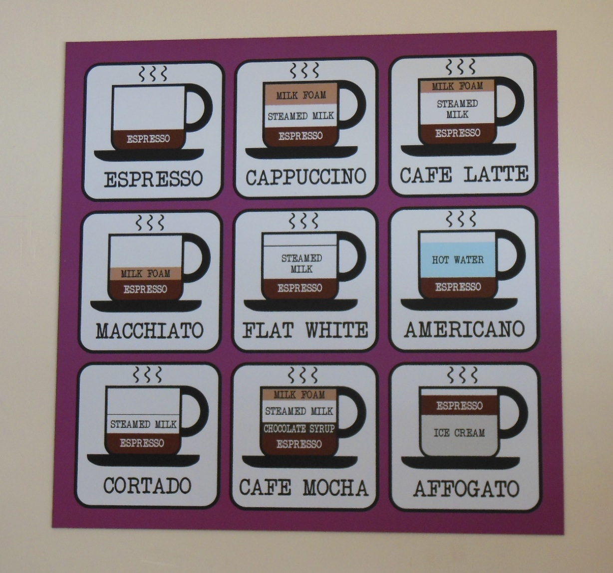

Finish the Cup: Instances and Classes
Other languages call their objects "beans," but serve extra-weak coffee in an attempt to be all things to all people
As discussed in References, Identity, Arrays, and Objects and again in Encapsulating State, CoffeeScript objects are very simple, yet the combination of objects, functions, and closures can create powerful data structures. That being said, there are language features that cannot be implemented with Plain Old CoffeeScript Objects, functions, and closures20.
One of them is inheritance. In CoffeeScript, inheritance provides a cleaner, simpler mechanism for extending data structures, domain models, and anything else you represent as a bundle of state and operations.
Prototypes are Simple, it’s the Explanations that are Hard To Understand
As you recall from our code for making objects extensible, we wrote a function that returned a Plain Old CoffeeScript Object. The colloquial term for this kind of function is a “Factory Function.”
Let’s strip a function down to the very bare essentials:
Ur = () ->
This doesn’t look like a factory function: It doesn’t have an expression that yields a Plain Old CoffeeScript Object when the function is applied. Yet, there is a way to make an object out of it. Behold the power of the new keyword:
new Ur()
#=> {}
We got an object back! What can we find out about this object?
new Ur() is new Ur()
#=> false
Every time we call new with a function and get an object back, we get a unique object. We could call these “Objects created with the new keyword,” but this would be cumbersome. So we’re going to call them instances. Instances of what? Instances of the function that creates them. So given i = new Ur(), we say that i is an instance of Ur.
For reasons that will be explained after we’ve discussed prototypes, we also say that Ur is the constructor of i, and that Ur is a constructor function. Therefore, an instance is an object created by using the new keyword on a constructor function, and that function is the instance’s constructor.
prototypes
There’s more. Here’s something you may not know about functions:
Ur.prototype
#=> {}
What’s this prototype? Let’s run our standard test:
(() ->).prototype is (() ->).prototype
#=> false
Every function is initialized with its own unique prototype. What does it do? Let’s try something:
Ur.prototype.language = 'CoffeeScript'
continent = new Ur()
#=> {}
continent.language
#=> 'CoffeeScript'
That’s very interesting! Instances seem to behave as if they had the same elements as their constructor’s prototype. Let’s try a few things:
continent.language = 'JavaScript'
continent
#=> {language: 'JavaScript'}
continent.language
#=> 'JavaScript'
Ur.prototype.language
'CoffeeScript'
You can set elements of an instance, and they “override” the constructor’s prototype, but they don’t actually change the constructor’s prototype. Let’s make another instance and try something else.
another = new Ur()
#=> {}
another.language
#=> 'CoffeeScript'
New instances don’t acquire any changes made to other instances. Makes sense. And:
Ur.prototype.language = 'Sumerian'
another.language
#=> 'Sumerian'
Even more interesting: Changing the constructor’s prototype changes the behaviour of all of its instances. This strongly implies that there is a dynamic relationship between instances and their constructors, rather than some kind of mechanism that makes objects by copying.21
Speaking of prototypes, here’s something else that’s very interesting:
continent.constructor
#=> [Function]
continent.constructor is Ur
#=> true
Every instance acquires a constructor element that is initialized to their constructor. This is true even for objects we don’t create with new in our own code:
{}.constructor
#=> [Function: Object]
If that’s true, what about prototypes? Do they have constructors?
Ur.prototype.constructor
#=> [Function]
Ur.prototype.constructor is Ur
#=> true
Very interesting! We will take another look at the constructor element when we discuss class extension.
revisiting this idea of queues
Let’s rewrite our Queue to use new and .prototype, using this and =>:
extend = (object, extensions) ->
object[key] = value for key, value of extensions
object
Queue = ->
extend(this,
array: []
head: 0
tail: -1
)
extend(Queue.prototype,
pushTail: (value) ->
this.array[this.tail += 1] = value
pullHead: ->
unless this.isEmpty()
do (value = this.array[this.head]) =>
this.array[this.head] = undefined
this.head += 1
value
isEmpty: ->
this.tail < this.head
)
You recall that when we first looked at this, we only covered the case where a function that belongs to an object is invoked. Now we see another case: When a function is invoked by the new operator, this is set to the new object being created. Thus, our code for Queue initializes the queue.
You can see why this is so handy in CoffeeScript: We wouldn’t be able to define functions in the prototype that worked on the instance if CoffeeScript didn’t give us an easy way to refer to the instance itself.
objects everywhere?
Now that you know about prototypes, it’s time to acknowledge something that even small children know: Everything in CoffeeScript behaves like an object, everything in CoffeeScript behaves like an instance of a function, and therefore everything in CoffeeScript behaves as if it inherits some methods from its constructor’s prototype and/or has some elements of its own.
For example:
3.14159265.toPrecision(5)
#=> '3.1415'
'FORTRAN, SNOBOL, LISP, BASIC'.split(', ')
#=> [ 'FORTRAN',
# 'SNOBOL',
# 'LISP',
# 'BASIC' ]
[ 'FORTRAN',
'SNOBOL',
'LISP',
'BASIC' ].length
#=> 5
Functions themselves are instances, and they have methods. For example, we know that CoffeeScript treats the fat arrow as if you were using the this and that idiom. But if you didn’t have a fat arrow and you didn’t want to take a chance on getting the idiom wrong, you could take advantage of the fact that every function has a method call.
Call’s first argument is a context: When you invoke .call on a function, it invoked the function, setting this to the context. It passes the remainder of the arguments to the function.
So, if we have:
pullHead: ->
unless this.isEmpty()
do (value = this.array[this.head]) =>
this.array[this.head] = undefined
this.head += 1
value
We could also write it like this:
pullHead: ->
unless this.isEmpty()
((value) ->
this.array[this.head] = undefined
this.head += 1
value
).call(this, this.array[this.head])
It seems like are objects everywhere in CoffeeScript!
 So what do we know about prototypes?
So what do we know about prototypes?
- The
newkeyword turns any function into a constructor for creating instances. - All functions have a
prototypeelement. - Instances behave as if the elements of their constructor’s prototype are their elements.
- Instances can override their constructor’s prototype without altering it.
- The relationship between instances and their constructor’s prototype is dynamic.
thisworks seamlessly with methods defined in prototypes.- Everything behaves like an object.
impostors
You may have noticed that we use “weasel words” to describe how everything in CoffeeScript behaves like an instance. Everything behaves as if it was created by a function with a prototype.
The full explanation is this: As you know, CoffeeScript has “value types” like String, Number, and Boolean. As noted in the first chapter, value types are also called primitives, and one consequence of the way CoffeeScript implements primitives is that they aren’t objects. Which means they can be identical to other values of the same type with the same contents, but the consequence of certain design decisions is that value types don’t actually have methods or constructors. They aren’t instances of some constructor.
So. Value types don’t have methods or constructors. And yet:
"Spence Olham".split(' ')
#=> ["Spence", "Olham"]
Somehow, when we write "Spence Olham".split(' '), the string "Spence Olham" isn’t an instance, it doesn’t have methods, but it does a damn fine job of impersonating an instance of a String constructor. How does "Spence Olham" impersonate an instance?
CoffeeScript pulls some legerdemain. When you do something that treats a valu like an object, CoffeeScript checks to see whether the value actually is an object. If the value is actually a primitive,22 CoffeeScript temporarily makes an object that is a kinda-sorta copy of the primitive and that kinda-sorta copy has methods and you are temporarily fooled into thinking that "Spence Olham" has a .split method.
These kinda-sorta copies are called String instances as opposed to String primitives. And the instances have methods, while the primitives do not. How does CoffeeScript make an instance out of a primitive? With new, of course. Let’s try it:
new String("Spence Olham")
#=> "Spence Olham"
The string instance looks just like our string primitive. But does it behave like a string primitive? Not entirely:
new String("Spence Olham") is "Spence Olham"
#=> false
Aha! It’s an object with its own identity, unlike string primitives that behave as if they have a canonical representation. If we didn’t care about their identity, that wouldn’t be a problem. But if we carelessly used a string instance where we thought we had a string primitive, we could run into a subtle bug:
if userName is "Spence Olham"
getMarried()
goCamping()
That code is not going to work as we expect should we accidentally bind new String("Spence Olham") to userName instead of the primitive "Spence Olham".
This basic issue that instances have unique identities but primitives withthe same contents have the same identities–is true of all primitive types, including numbers and booleans: If you create an instance of anything with new, it gets its own identity.
There are more pitfalls to beware. Consider the truthiness of string, number and boolean primitives:
if '' then 'truthy' else 'falsy'
#=> 'falsy'
if 0 then 'truthy' else 'falsy'
#=> 'falsy'
if false then 'truthy' else 'falsy'
#=> 'falsy'
Compare this to their corresponding instances:
if new String('') then 'truthy' else 'falsy'
#=> 'truthy'
if new Number(0) then 'truthy' else 'falsy'
#=> 'truthy'
if new Boolean(false) then 'truthy' else 'falsy'
#=> 'truthy'
Our notion of “truthiness” and “falsiness” is that all instances are truthy, even string, number, and boolean instances corresponding to primitives that are falsy.
There is one sure cure for “CoffeeScript Impostor Syndrome.” Just as new PrimitiveType(...) creates an instance that is an impostor of a primitive, PrimitiveType(...) creates an original, canonicalized primitive from a primitive or an instance of a primitive object.
For example:
String(new String("Spence Olham")) is "Spence Olham"
#=> true
Getting clever, we can write this:
original = (unknown) ->
unknown.constructor(unknown)
original(true) is true
#=> true
original(new Boolean(true) is true
#=> true
Of course, original will not work for your own creations unless you take great care to emulate the same behaviour. But it does work for strings, numbers, and booleans.
A Touch of Class
CoffeeScript has “classes,” for some definition of “class.” You’ve met them already, they’re constructors that are designed to work with the new keyword and have behaviour in their .prototype element. You can create one any time you like by:
- Writing the constructor so that it performs any initialization on
this, and: - Putting all of the method definitions in its prototype.
This is simple enough, but there are some advantages to making it even simpler, so CoffeeScript does. Here’s our queue again:
class Queue
constructor: ->
extend(this,
array: []
head: 0
tail: -1
)
pushTail: (value) ->
this.array[this.tail += 1] = value
pullHead: ->
unless this.isEmpty()
do (value = this.array[this.head]) =>
this.array[this.head] = undefined
this.head += 1
value
isEmpty: ->
this.tail < this.head
q = new Queue()
q.pushTail('hello')
q.pushTail('CoffeeScript')
Behind the scenes, CoffeeScript acts as if you’d written things out by hand, with several small but relevant details.
the constructor method
As you’ve probably noticed, CoffeeScript turns what may look like a constructor method into the body of the Queue function. You recall that every object in CoffeeScript has a constructor element initialized to the function that created it. So it’s natural that in the class statement, you use constructor to define the body of the function.
scope
CoffeeScript wraps the entire class statement in a do -> so that you can work with some normal case variables if you need them.
Here’s a gratuitous example:
class Queue
empty = 'UNUSED'
constructor: ->
extend(this,
array: []
head: 0
tail: -1
)
pushTail: (value) ->
this.array[this.tail += 1] = value
pullHead: ->
unless this.isEmpty()
do (value = this.array[this.head]) =>
this.array[this.head] = empty
this.head += 1
value
isEmpty: ->
this.tail < this.head
The value 'UNUSED' is bound to the name empty within the class “statement” but not outside it (unless you are aliasing an empty variable). CoffeeScript allows this kind of thing but will get hissy if you try to get fancy and write something like:
class Queue
do (empty = 'UNUSED') ->
constructor: ->
extend(this,
array: []
head: 0
tail: -1
)
# ...
That won’t work, you can’t wrap a do around the instance methods of the class.
at-at walkers
CoffeeScript, in what may be an homage to Ruby, provides an abbreviation for this., you can preface any label with an @ as a shortcut. This small detail could easily be ignored, except for the fact that there’s one place where it’s mandatory. With that teaser in place, let’s discuss a use case.
Let’s modify our Queue to count how many queues have been created:
class Queue
constructor: ->
Queue.queues += 1
extend(this,
array: []
head: 0
tail: -1
)
# ...
Queue.queues = 0
To make this work properly, CoffeeScript has to wrap our code in a do so that the code in the constructor always refers to the correct function, even if we subsequently change the binding for Queue in the outer environment. CoffeeScript does this.
Assigning values to elements of the function outside of the class statement is awkward, so CoffeeScript lets us put Queue.queues = 0 inside, anywhere we’d like. The top is fine. But interestingly, CoffeeScript also sets the context of the body of the class statement to be the class itself. So we can write:
class Queue
this.queues = 0
constructor: ->
Queue.queues += 1
extend(this,
array: []
head: 0
tail: -1
)
# ...
And back to our shortcut. We can also write:
class Queue
@queues = 0
constructor: ->
Queue.queues += 1
extend(this,
array: []
head: 0
tail: -1
)
pushTail: (value) ->
@array[@tail += 1] = value
pullHead: ->
unless @isEmpty()
do (value = @array[@head]) =>
@array[@head] = undefined
@head += 1
value
isEmpty: ->
@tail < @head
Everything up to now has been a matter of taste. But should you wish, you can write:
class Queue
@queues: 0
# ...
Putting the @ prefix (and not this.) on a label as part of the structure inside the class statement indicates that the element belongs to the constructor (or “class”) and not the prototype. Obviously, if you put functions in the constructor, you get constructor methods and not instance methods. For example:
class Queue
@queues: 0
@resetQueues: ->
@queues = 0
# ...
We’ve added a constructor method to reset the count.

It seems there is Strong Typing in Coffeeland
Classes
CoffeeScript’s class statement is a nice syntactic convenience over manually wiring everything up, and it may help avoid errors. Since most CoffeeScript programmers will use “classes,” it’s wise to use the class statement when the underlying semantics are what you want. That way your code will communicate its intent clearly and be a little more resistant to small errors.
Object Methods
An instance method is a function defined in the constructor’s prototype. Every instance acquires this behaviour unless otherwise “overridden.” Instance methods usually have some interaction with the instance, such as references to this or to other methods that interact with the instance. A constructor method is a function belonging to the constructor itself.
There is a third kind of method, one that any object (obviously including all instances) can have. An object method is a function defined in the object itself. Object methods usually have some interaction with the object, such as references to this or to other methods that interact with the object.
Object methods are really easy to create with Plain Old CoffeeScript Objects, because they’re the only kind of method you can use. Recall from This and That:
QueueMaker = ->
array: []
head: 0
tail: -1
pushTail: (value) ->
this.array[this.tail += 1] = value
pullHead: ->
unless this.isEmpty()
do (value = this.array[this.head]) =>
this.array[this.head] = undefined
this.head += 1
value
isEmpty: ->
this.tail < this.head
pushTail, pullHead, and isEmpty are object methods. Also, from encapsulation:
stack = do (obj = undefined) ->
obj =
array: []
index: -1
push: (value) ->
obj.array[obj.index += 1] = value
pop: ->
do (value = obj.array[obj.index]) ->
obj.array[obj.index] = undefined
obj.index -= 1 if obj.index >= 0
value
isEmpty: ->
Although they don’t refer to the object, push, pop, and isEmpty semantically interact with the opaque data structure represented by the object, so they are object methods too.
object methods within instances
Instances of constructors can have object methods as well. Typically, object methods are added in the constructor. Here’s a gratuitous example, a widget model that has a read-only id. We’re using the class statement, but it could just as easily be rolled by hand:
class WidgetModel
constructor: (id, attrs = {}) ->
this[key] = value for key, value of own attrs
@id = ->
id
this
set: (attrs) ->
# ...
get: (key) ->
# ...
has: (key) ->
# ...
set, get, and has are instance methods, but id is an object method: Each object has its own id closure, where id is bound to the id of the widget by the argument id in the constructor. The advantage of this approach is that instances can have different object methods, or object methods with their own closures as in this case. The disadvantage is that every object has its own methods, which uses up much more memory than instance methods, which are shared amongst all instances.
Canonicalization
Early in this book, we discussed how objects, arrays, and functions are reference types. When we create a new object, even if it has the same contents as some other object, it is a different value, as we can tell when we test its identity with is:
{ foo: 'bar' } is { foo: 'bar' }
#=> false
Sometimes, this is not what you want. A non-trivial example is the HashLife algorithm for computing the future of Conway’s Game of Life. HashLife aggressively caches both patterns on the board and their futures, so that instead of iteratively simulating the cellular automaton a generation at a time, it executes in logarithmic time.
In order to take advantage of cached results, HashLife must canonicalize square patterns. Meaning, it must guarantee that if two square patterns have the same contents, they must be the same object and share the same identity. This ensures that updates are shared everywhere.
One way to make this work is to eschew having all the code create new objects with a constructor. Instead, the construction of new objects is delegated to a cache. When a function needs a new object, it asks the cache for it. If a matching object already exists, it is returned. If not, a new one is created and placed in the cache.
This is the algorithm used by recursiveuniver.se, an experimental implementation of HashLife in CoffeeScript. The fully annotated source code for canonicalization is online, and it contains this method for the Square.cache object:
for: (quadrants, creator) ->
found = Square.cache.find(quadrants)
if found
found
else
{nw, ne, se, sw} = quadrants
Square.cache.add _for(quadrants, creator)
Instead of enjoying a stimulating digression explaining how that works, let’s make our own. We’re going to build a class for cards in a traditional deck. Without canonicalization, it looks like this:
class Card
ranks = [2..10].concat ['J', 'Q', 'K', 'A']
suits = ['C', 'D', 'H', 'S']
constructor: ({@rank, @suit}) ->
throw "#{@rank} is a bad rank" unless @rank in ranks
throw "#{@suit} is a bad suit" unless @suit in suits
toString: ->
'' + @rank + @suit
The instances are not canonicalized:
new Card({rank: 4, suit: 'S'}) is new Card({rank: 4, suit: 'S'})
#=> false
Nota Bene:
If a constructor function explicitly returns a value, that’s what is returned. Otherwise, the newly constructed object is returned. Unlike other functions and methods, the last evaluated value is not returned by default.
We can take advantage of that to canonicalize cards:
class Card
ranks = [2..10].concat ['J', 'Q', 'K', 'A']
suits = ['C', 'D', 'H', 'S']
cache = {}
constructor: ({@rank, @suit}) ->
throw "#{@rank} is a bad rank" unless @rank in ranks
throw "#{@suit} is a bad suit" unless @suit in suits
return cache[@toString()] or= this
toString: ->
'' + @rank + @suit
Now the instances are canonicalized:
new Card({rank: 4, suit: 'S'}) is new Card({rank: 4, suit: 'S'})
#=> true
Wonderful!
caveats
Using techniques like this to canonicalize instances of a class has many drawbacks and takes careful consideration before use. First, while this code illustrates the possibilities inherent in having a constructor return a different object, it is wasteful in that it creates an object only to throw it away if it is already in the cache.
If there are a tractable number of possible instances of a class (such as cards in a deck), it may be more practical to enumerate them all in advance rather than lazily create them, and/or to use a factory method to retried them rather than changing teh behaviour of the constructor.
More serious is that the engine that executes CoffeeScript programs does not support weak references.23 As a result, if you wish to perform cache eviction for memory management purposes, you will have to implement your own reference management scheme. This may be non-trivial.
If you have many, many possible instances, your cache can end up holding onto what some programmers call zombie objects: Objects that are not in use anywhere in your program except the cache. If they are never accessed again, the memory they take up will never be released for reuse. An early version of the HashLife implementation did not clear objects from the cache. Some computations would consume as much as 700MB of data for the cache before the virtual machine was unable to continue. Most of that memory was consumed by zombie objects.
All that being said, canonicalization is sometimes the appropriate path forward, and even if it isn’t, it serves to illustrate the possibilities latent in writing constructors that return objects explicitly.
This Section Needs No Title
CoffeeScript is fundamentally an object-oriented language in the sense that Alan Kay first described object orientation. His vision was of software constructed from entities that communicate with message passing, with the system being extremely dynamic (what he described as “extreme late-binding”). However, words and phrases are only useful when both writer and reader share a common understanding, and for many people the words “object-oriented” carry with them a great deal of baggage related to constructing ontologies of domain entities.
The word “Inheritance” also means many different things to many different people. Some people take it extremely seriously, tugging thoughtfully on their long white beards as they ponder things like Strict Liskov Equivalence. We will avoid this term as well.
What we will discuss is extension. In the next section, we’re going to show how functions that create instances can extend each other through their prototypes. Since we just finished looking at the class statement, we’ll start by chaining two classes together, and then generalize extension so that you can use it with any two functions that create instances.
We’ll finish by looking at the excellent support CoffeeScript provides so that you can accomplish all of this with a single keyword.
Extending Classes
You recall from Composition and Extension that we extended a Plain Old CoffeeScript Queue to create a Plain Old CoffeeScript Deque. But what if we have decided to use CoffeeScript’s prototypes and class statements instead of Plain Old CoffeeScript Objects? How do we extend a queue into a deque?
Here’s our Queue:
class Queue
constructor: ->
@array = []
@head = 0
@tail = -1
pushTail: (value) ->
@array[@tail += 1] = value
pullHead: ->
unless @isEmpty()
do (value = @array[@head]) =>
@array[@head] = undefined
@head += 1
value
isEmpty: ->
@tail < @head
And our Deque before we wire things together:
class Deque
size: ->
@tail - @head + 1
pullTail: ->
unless @isEmpty()
do (value = @array[@tail]) =>
@array[@tail] = undefined
@tail -= 1
value
INCREMENT = 4
pushHead: (value) ->
if @head is 0
for i in [@tail..@head]
@array[i + INCREMENT] = @array[i]
@tail += INCREMENT
@head += INCREMENT
@array[@head -= 1] = value
So what do we want from dequeues?
- A
Dequefunction that initializes a deque when invoked withnew Deque.prototypemust have all the behaviour of a deque and all the behaviour of a queue.
Hmmm. So, should we copy everything from Queue.prototype into Deque.prototype? No, there’s a better idea. Prototypes are objects, right? Why must they be Plain Old CoffeeScript Objects? Can’t a prototype be an instance?
Yes they can. Imagine that Deque.prototype was a proxy for an instance of Queue. It would, of course, have all of a queue’s behaviour through Queue.prototype. We don’t want it to be an actual instance, mind you. It probably doesn’t matter with a queue, but some of the things we might work with might make things awkward if we make random instances. A database connection comes to mind, we may not want to create one just for the convenience of having access to its behaviour.
Here’s such a proxy:
QueueProxy = ->
QueueProxy.prototype = Queue.prototype
Our QueueProxy isn’t actually a Queue, but its prototype is an alias of Queue.prototype. Thus, it can pick up Queue’s behaviour. We want to use it for our Deque’s prototype. Let’s insert that code in our class:
class Deque
QueueProxy = ->
QueueProxy.prototype = Queue.prototype
Deque.prototype = new QueueProxy();
size: ->
@tail - @head + 1
# ...
Before we rush off to try this, we’re missing something. How are we going to initialize our deques? We’d better call Queue’s constructor:
constructor: ->
Queue.prototype.constructor.call(this)
Here’s what we have so far:
class Deque
QueueProxy = ->
QueueProxy.prototype = Queue.prototype
@prototype = new QueueProxy();
constructor: ->
Queue.prototype.constructor.call(this)
# ...
And it seems to work:
d = new Deque()
d.pushTail('Hello')
d.pushTail('CoffeeScript')
d.pushTail('!')
d.pullHead()
#=> 'Hello'
d.pullTail()
#=> '!'
d.pullHead()
#=> 'CoffeeScript'
Wonderful!
getting the constructor element right
How about some of the other things we’ve come to expect from instances?
d.constructor is Deque
#=> false
Oops! Messing around with Dequeue’s prototype broke this important equivalence. Luckily for us, the constructor property is mutable for objects we create. So, let’s make a small change to QueueProxy:
class Deque
QueueProxy = ->
@constructor = Deque
this
QueueProxy.prototype = Queue.prototype
@prototype = new QueueProxy();
# ...
Now it works:
d.constructor is Deque
#=> true
The QueueProxy function now sets the constructor for every instance of a QueueProxy (hopefully just the one we need for the Deque class). It returns the object being created (it could also return undefined and work. But if it carelessly returned something else, that would be assigned to Deque’s prototype, which would break our code).
extracting the boilerplate
Let’s turn our extension modifications into a function:
xtend = (child, parent) ->
do (proxy = undefined) ->
proxy = ->
@constructor = child
this
proxy.prototype = parent.prototype
child.prototype = new proxy()
And use it in Deque:
class Deque
xtend(Deque, Queue)
constructor: ->
Queue.prototype.constructor.call(this)
size: ->
@tail - @head + 1
pullTail: ->
unless @isEmpty()
do (value = @array[@tail]) =>
@array[@tail] = undefined
@tail -= 1
value
INCREMENT = 4
pushHead: (value) ->
if @head is 0
for i in [@tail..@head]
@array[i + INCREMENT] = @array[i]
@tail += INCREMENT
@head += INCREMENT
@array[@head -= 1] = value
N. And you can use xtend even if you don’t want to use the class statement:
A = ->
B = ->
xtend(B, A)
It’s so nice that you wonder it isn’t already in CoffeeScript. Behold:
B extends A
Most helpful! In fact, CoffeeScript’s keyword is slightly superior to the xtend function: It provides support for extending functions that have other properties, not just the prototype.
You should almost always use extends rather than rolling your own code to chain functions and instances. And even if you let CoffeeScript do the work, you should always understand what CoffeeScript is doing for you.
How about the class statement? CoffeeScript does a lot more work for you if you wish. You can write:
class Deque
Deque extends Queue
constructor: ->
Queue.prototype.constructor.call(this)
# ...
But there’s more. If you instead write:
class Deque extends Queue
# ...
- CoffeeScript will even more work for you. If you aren’t doing any extra setup, you can leave the constructor out. CoffeeScript will handle calling the extended function’s constructor for you.
- If you do wish to do some extra setup, write your own constructor. Like Ruby, you can call
superin any method to access the extended version of the same method.
Extending functions that create instances or classes is a logical process of connecting functions and prototypes. There is no special “magic” outside of the .prototype and .constructor elements of every object.
CoffeeScript’s class and extends keywords handle a lot of the boilerplate and play nicely together. Use them unless you have specific needs they don’t cover.
Summary: Instances and Classes
Here's a nice picture to look at while we prepare this summary
interlude…
Drawing a Doppio
Aaron De Lazzer on Ristretto:
“The ristretto shot of espresso is one of the most fiercely debated and favourite topics amongst the coffee cognoscenti. It is the purists pour. The cutting edge of espresso extraction, flying in the face of the “Big Gulp” coffee drinker like nothing else around.
In anything at all, perfection is finally attained not when there is no longer anything to add, but when there is no longer anything to take away.–Antoine de Saint-Exupery
“Antoine would have drank ristretto shots.
“There is no where to hide with a straight unadulterated shot of espresso. Even more (less?) so with a ristretto shot. Any weakness in the blend or in the preparation of the coffee will be brought to light here. Either the heavens open up and the angels sing after that first sip or….something significantly less. Which is always such a disappointment knowing all the potential distilled into the dribble of coffee liquor that barely coats the bottom of your cup.”